RevengeDeadPuzzle
作品リンク
Unityroomで遊ぶ GitHubソースコードゲームのコンセプト
「死＝ゲームオーバー」ではない、死を積み重ねることで進むアクション型パズルゲームです。
プレイヤーが死亡して残した「死体」を足場にしたり、ギミックの一部として活用するなど、死を単なる失敗ではなく攻略の重要なプロセスとして再定義しました。
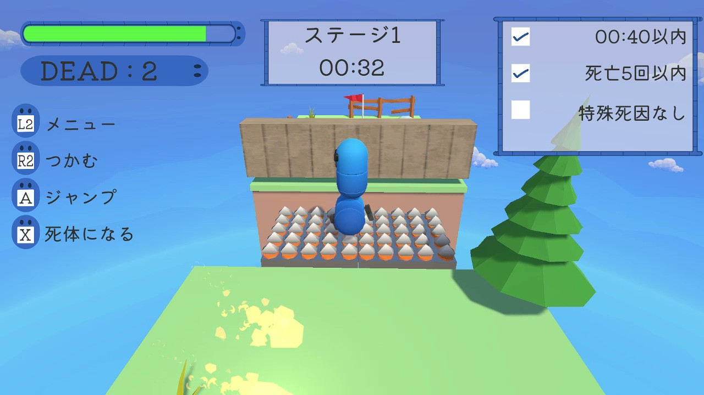
企画書
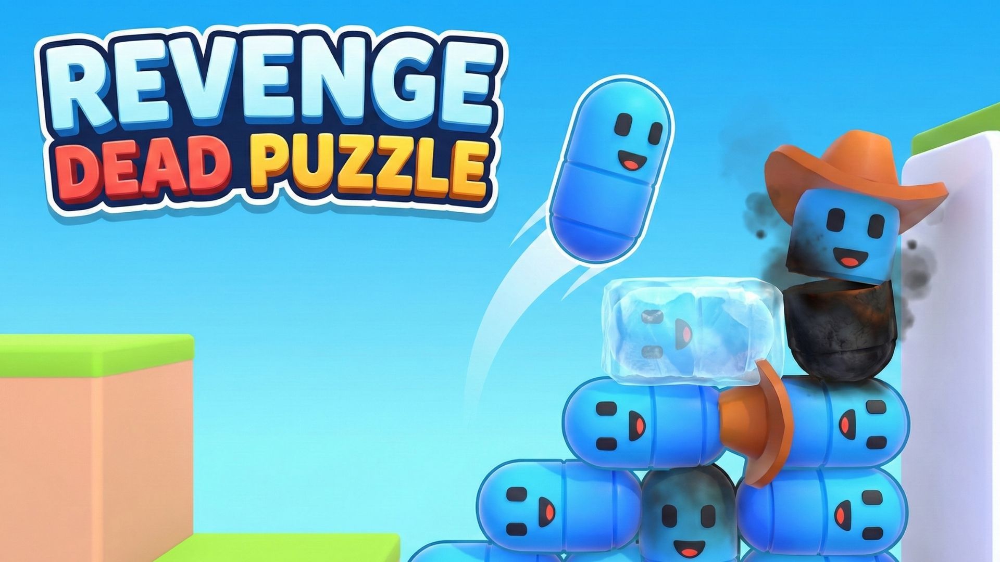
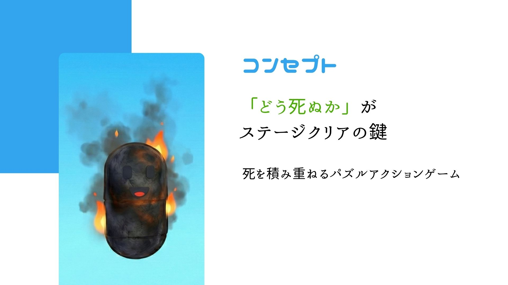
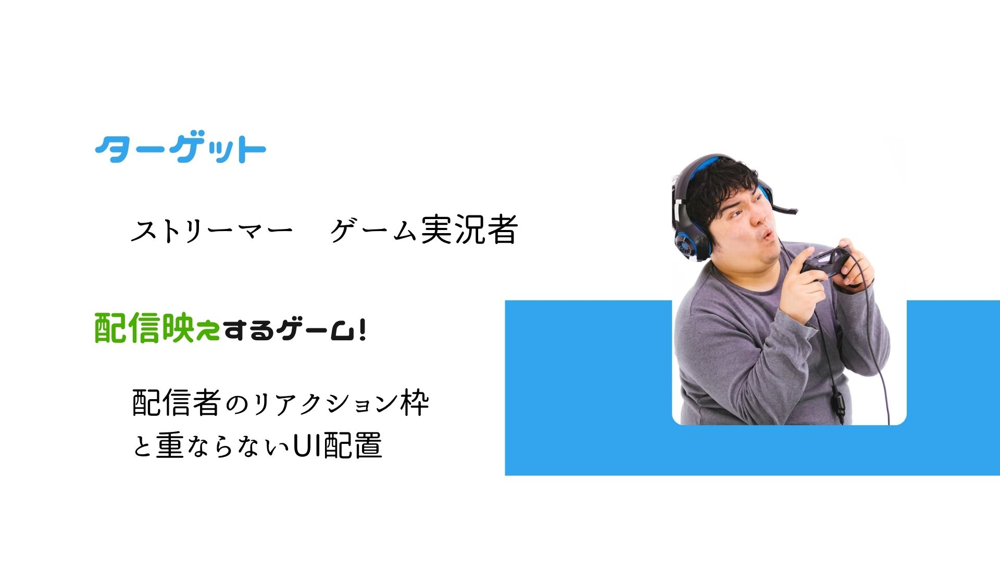
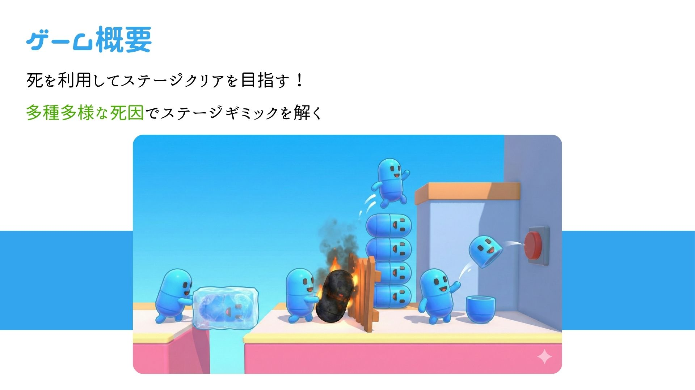
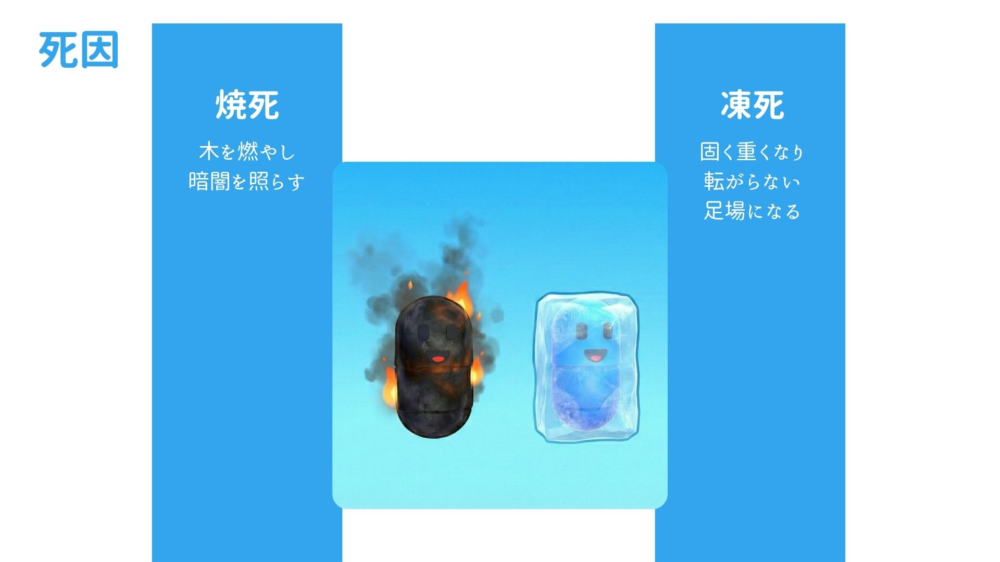
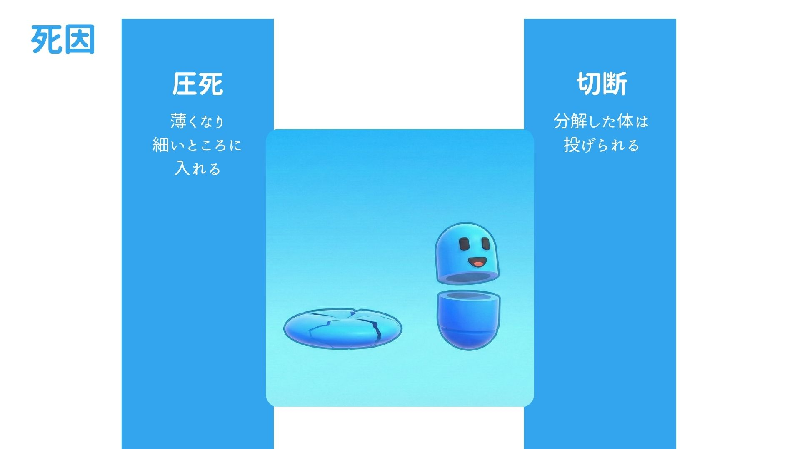
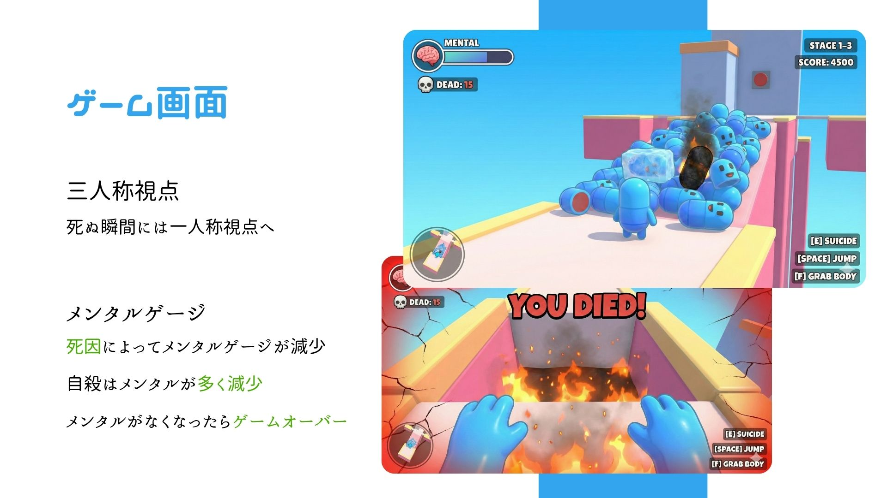
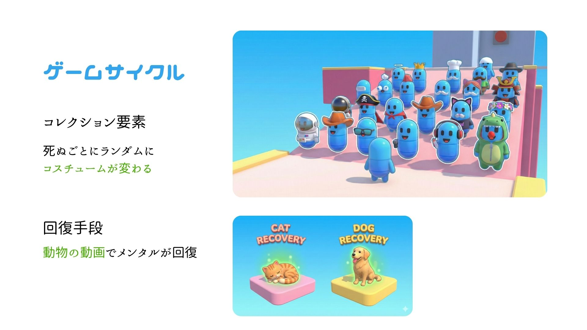
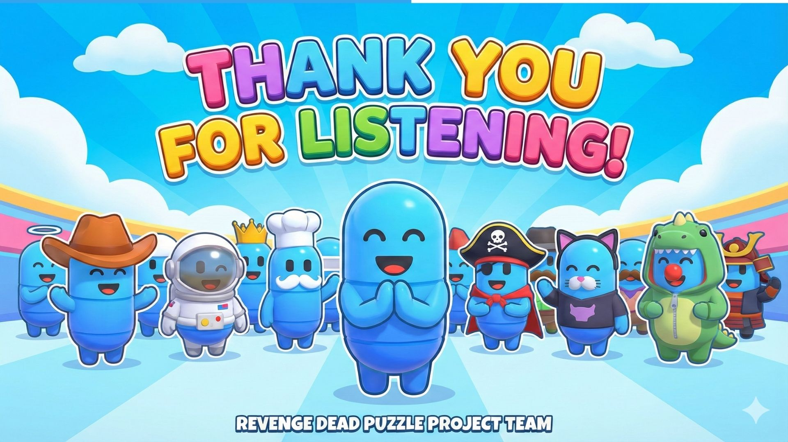
ゲーム内容のこだわり
プレイヤーに飽きさせず、長く楽しんでもらうために以下の工夫を凝らしました。
- キーボード・コントローラー両対応：操作方法の表示は、入力方式を切り替えると瞬時に対応したボタン表示に切り替わります。
- 多彩な死因とギミック：基本は三人称視点ですが、死亡時のみ一人称視点に切り替えることで、臨場感やインパクトを演出しています。また、ステージごとに中心となる死因に応じたギミック（圧死体によるメダルゲーム、凍死体によるゴルフなど）を用意し、ユニークな発想を盛り込みました。
- コレクション要素：プレイヤースポーン時にランダムで決まるコスチュームを集める要素を追加し、収集の楽しさを提供しています。
- 評価システムの導入：ただクリアするだけでなく、各ステージに評価項目を設けることで、より良いスコアでのクリアを目指すモチベーションを高めています。
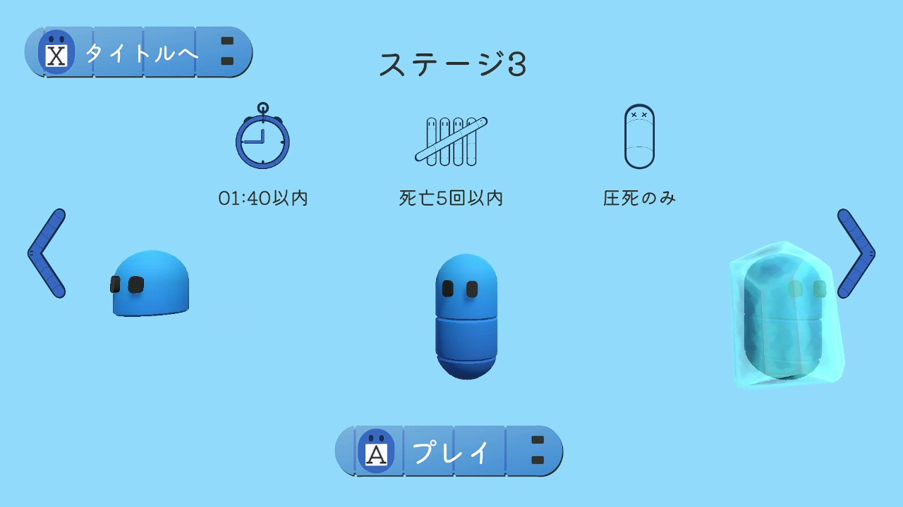
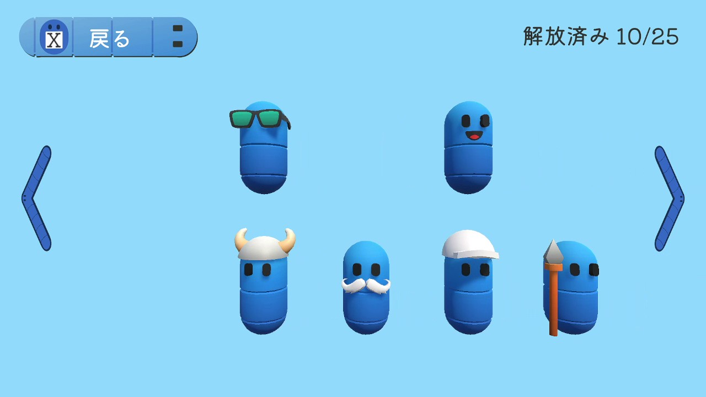
工夫点：チーム運営・プロジェクト管理
本チーム開発では、円滑に制作を進めるためにドキュメントの整備と状況に合わせたタスク分配を徹底しました。
手元の作業を明確化するため、企画書や設計図に加え、仕様書、画面構成図、必要素材リスト、タスクを分解したTODOリスト、作業手順書を作成し、メンバーに共有しました。
また、Git運用の見直しを行い、ブランチを徹底して活用することで、作業の確実な分担と安全な統合を実現しています。
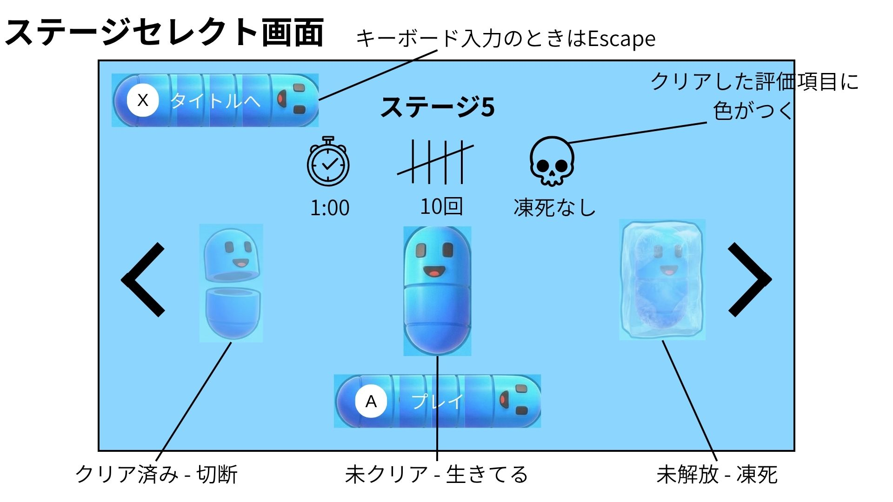
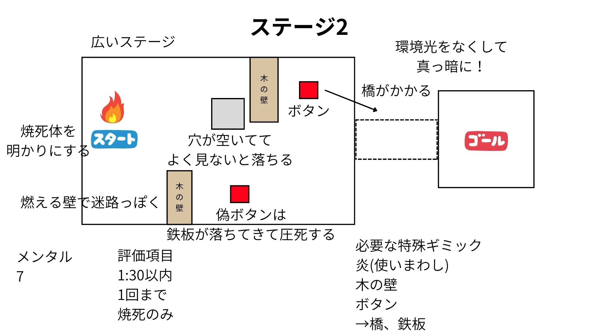
開発後半、進捗の滞りが見られたためヒアリングを実施しました。
病状の悪化で定期参加が難しいメンバーには作業リストに沿った個人作業形式へ、プログラミング経験が不足していたメンバーには素材作成やステージ案出しなど非コーディング作業へシフトさせるなど、メンバーの状況に合わせたタスクの柔軟な再調整を行いました。
これらの対応により、長期休み中という限られた期限内でのリリース目標を達成することができました。
工夫点：アーキテクチャ設計
前回のチーム制作作品である「タイタンXムジカーレ」での、「Managerクラスの肥大化による保守性の低下（分解不足や依存関係の集中等）」「全てのデータがJSON形式だったことによる人的エラーの発生」といった反省を活かし、今回は保守性と拡張性の高い設計を心掛けました。
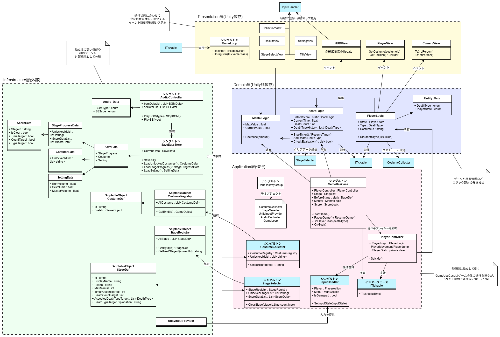
1. 4層アーキテクチャによる役割の分離
クラス構成を以下の4つに分離し、チームでの役割分担を明確にするとともに、互いの干渉を最小限に抑えました。
- Domain層：Unityの機能に依存しない、純粋なゲームロジック
- Application層：ゲーム全体の進行管理
- Presentation層：UI操作や描画処理
- Infrastructure層：ファイルの読み書きなど、汎用性の高い外部機能
2. GameLoopとITickableによるフレーム処理の管理
各スクリプトで個別に Update メソッドを使用する代わりに、ITickable インターフェースを実装し、GameLoop
で一括管理する仕組みにしました。
これにより、Update の肥大化を防ぎ、MonoBehaviour を継承しない純粋なロジッククラスでも毎フレームの処理が可能になりました。
3. イベント駆動による状態監視
ロジックや進行を管理するクラスがUI側を直接制御するのではなく、イベント（Action等）を発火させる仕組みにしました。
UIやView側がそれを監視し、自律的に表示を切り替えるようにすることで、内部実装と表示の疎結合を実現しています。
4. ScriptableObjectによる安全なデータ管理
JSONなどの生データを直接編集するのをやめ、Unity標準の ScriptableObject
を用いてデータを管理するように変更しました。これにより、インスペクタ上での編集が可能になり、データ作成の効率化と記述ミスによる人的エラーの防止を達成しました。